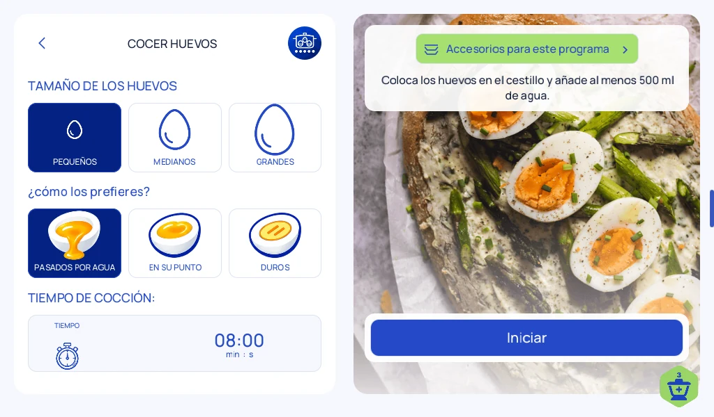
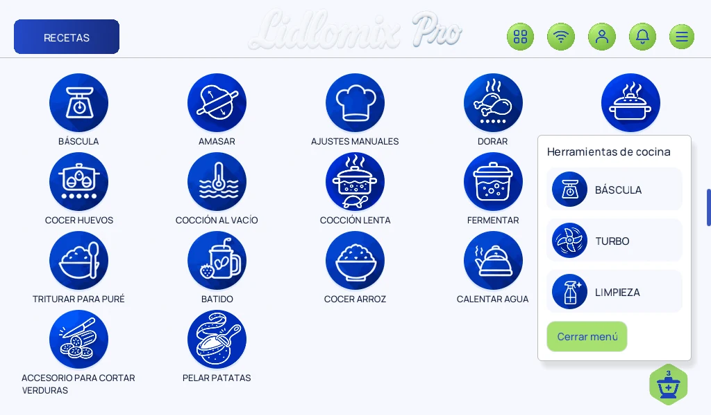

Monsieur Cuisine Connect ·
Ajustes y accesos directos en la 0.16.4
Desde la versión 0.15.3, he cambiado la forma en que el robot está en la pantalla. Minutos y segundos se desplazan por separado, la temperatura y la velocidad se mueven hacia el lado, y después de configurar todo, simplemente presione Inicio. La imagen del plato se puede desarrollar a través de la pantalla, y desde las escalas, Turbo y Washback hasta el mismo paso de la receta.
Temperatura y velocidad movida al lado
El primer editor tenía un círculo de inspiración inteligente. Después de los ensayos, engrosé la frontera y expandí el área del tacto. Al elegir una temperatura o un engranaje específico, el nivel de movimiento de los dedos era más conveniente. El valor seleccionado es grande y visible en el medio, y en los lados se puede ver la configuración adyacente. Mover a la izquierda eleva el valor, la derecha lo baja. Retiré la lista extra bajo la rueda.

Tiempo en dos columnas y uno Inicio
Toque el campo de tiempo, luego mueva los minutos o segundos arriba o abajo por separado. El desplazamiento de una columna deja al otro sin cambios. El pomo físico regula la columna activa. En programas largos como la fermentación, las columnas muestran horas y minutos. Los cambios en los campos editables se aplican inmediatamente. Puedes ir de vez en cuando a temperatura y presionar Inicio sin ajustes de aprobación separados.
En los ajustes manuales, la pantalla muestra un límite de 15 minutos a la velocidad 10. En el Connect, se aplica a las velocidades 7 a 10. Cuando se activa el calentamiento, un aviso indica que la velocidad máxima es 3. Este límite también se aplica al giro inverso. Si los ajustes lo permiten, el temporizador manual admite hasta 99 minutos y 99 segundos. Los programas automáticos tienen sus propios rangos.

Programas de lectura y dirección de la facturación
Un toque cambia la dirección. Al girar a la derecha, se puede ver una hoja con flechas, y al girar a la izquierda, se puede ver una solapa con flechas. He añadido un tercio de los parámetros y variantes de la masa. Los pasteles duros, suaves y líquidos tienen sus propios gráficos. El encabezado del programa muestra un pequeño icono del menú.
En la cocina de huevo, agrandé las descripciones de tamaño, grado de cocina y tiempo. En cada fila un campo azul es activo, los otros tienen un fondo blanco. En la cocina de vapor, la opción Calor antes de contar tiene un área más grande y una distancia de Inicio y Stop. Un intervalo similar se confirma por la asunción de un aperitivo y la cubierta para cortar verduras.

Imagen completa de platos y baldosas más cortas
En una receta abierta, toque la correa de fotos dos veces para ver toda la imagen en proporción. Un toque cierra la vista previa y vuelve a la receta. El gesto funciona en el catálogo offline Monsieur Cuisine y en el Recipes Adapted Pro. En el directorio Pro, la tarjeta se reserva tres líneas para el título, y el nombre completo es visible cuando se abre.

Turbo, Peso y lavado como programas completos
Turbo y Peso están a punto de empezar en sus propios ajustes. También puede abrir un lavado desde el menú flotante. Cada acceso directo muestra la misma pantalla completa como un programa separado. Regresar a la receta restaura el paso actual y Regresar al programa retiene los parámetros preestablecidos. Para utilizar Turbo, es necesario mantener el botón en la pantalla del programa.



Todas las versiones después de 0.15.3
- 0.15.4 — El anillo del cangrejo físico se apaga cuando Connect se pone a dormir y se enciende cuando se despierta.
- 0.15.5 - Interruptor de giros con un toque y una selección separada de la unidad de tiempo para ajustar el pomo. En esta serie de obras también había iconos más grandes, variantes de tortas y huevos, descripciones más claras y campos más grandes de opciones para vapor y aperitivos.
- 0.15.6 — Vista previa de pantalla completa de una foto de receta en ambos catálogos.
- 0.15.7 — azulejos inferiores en las Recetas Adaptadas Pro, con tres líneas por título.
- 0.15.8 — campos de tiempo redondo con selección unitaria y botones + y −.
- 0.15.9 — un editor de tiempo grande separado con una frontera a la derecha y una selección de unidad.
- 0.16.0 — Configuración personalizada ampliada hasta 99 min y 99 sec, botones min centrados y segundos, y soporte de esta gama en módulo Connect.
- 0.16.1 — más del doble del tamaño del perímetro de un editor grande y un área más amplia que responde a un corto arrastre.
- 0.16.2 — Columnas de tiempo verticales, Ajustes instantáneos, Comience bajo editor, Limit Messages y Turbo Shortcuts y Peso en Ajustes propios.
- 0.16.3 — selectores horizontales de temperatura y velocidad, grandes dígitos y eliminación de la lista adicional de configuración.
- 0.16.4 — Pantallas completas de herramientas de acceso directo y volver al mismo programa o paso de receta.
Pruebas en Connect
En el robot comprobé el desplazamiento de las dos columnas de tiempo, el límite de 15:00 a velocidad 10, el aviso de calentamiento, los controles horizontales y el regreso desde las herramientas rápidas. En la unidad de prueba también investigué una lectura de la báscula bloqueada en 0 g. Con el módulo anterior del Connect y tras desconectar la alimentación, la báscula seguía sin reaccionar ante una bolsa de 1 kg. La causa sigue sin confirmarse.